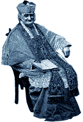

Saint of the Month
Saint of the Month
|
Tree Lugger

Before spiking, before lusty protestors chained themselves to the giant redwoods in Northern California's logging forests, and even before president Teddy Roosevelt declared them to be nationally protected, the sequoias had a friend in Charles Kellogg. A vaudeville entertainer with a gift for voicing bird songs and with a fierce environmental bent, Kellogg was said to have been born in high, gay '90s desolation learning the ways of the land as a child from the local Native American people who once populated California's Sierra Nevada mountains. One would assume from his self-styled promotional writings that he had neither mother nor father but lived from the land ferally, his only human contact coming from the local Native peoples. We strongly doubt this. But there is no doubt that this WWI veteran was unfashionably vegetarian, once hung out of a plane flying over the streets of Paris crooning his avian songs to the populace below, walked 500 miles across the swath of the West Indies, and was a friend to the sculptor August Rodin and the naturalist John Muir. In addition, Kellogg developed an unusual plan to promote the beauty and importance of the old-growth California redwoods. He put one on wheels. Estimated to be 4,800 years old, this tree had fallen on its own and was then hand-hewn by Kellogg with an axe and an adze into what he proudly termed his "Travel Log." Chopping it to a usable 19-foot length, he mounted its six-ton girth onto a Nash Quad truck, and hollowed it out to create a living space that consisted of a kitchenette, a folding lavatory, a toilet, closet, folding double bed, cabinets, stove, dining table, bookcase, dresser, and guest room. He fitted it out with running water and electricity, rubbed 12 pounds of beeswax into its interior, and hit the road to spread the word about the sanctity of these forests, which even then were being decimated by logging and transportation interests. Instead of proselytizing about the dire predicament of the redwoods, Kellogg's stage act consisted of the following "tricks," taken from a reproduction of his 1917 promotional circular:
All of this while selling Liberty Bonds and pausing before his self-painted redwood forest stage drops to explain the importance of his mission. The Humboldt Redwoods Interpretive Association now owns title to the Travel Log and are attempting to build a curatorially correct housing for it at their visitors center in the heart of the last old-growth stand in California. They've had the plans drawn up and have received an estimate of $150,000 for its completion. If you would like to donate to this fund, you can contact them at:
P.O. Box 276 Weott, CA 95571 USA 707.946.2263 hrsp@northcoast.com
What makes a saint? You do. Send us your picks for halo-holidays, trinket-baked cakes, special devotions, and a free pedicure.
Back to the Table of Contents.
Surf the Boulevards network
to other great alternative
content sites.
|